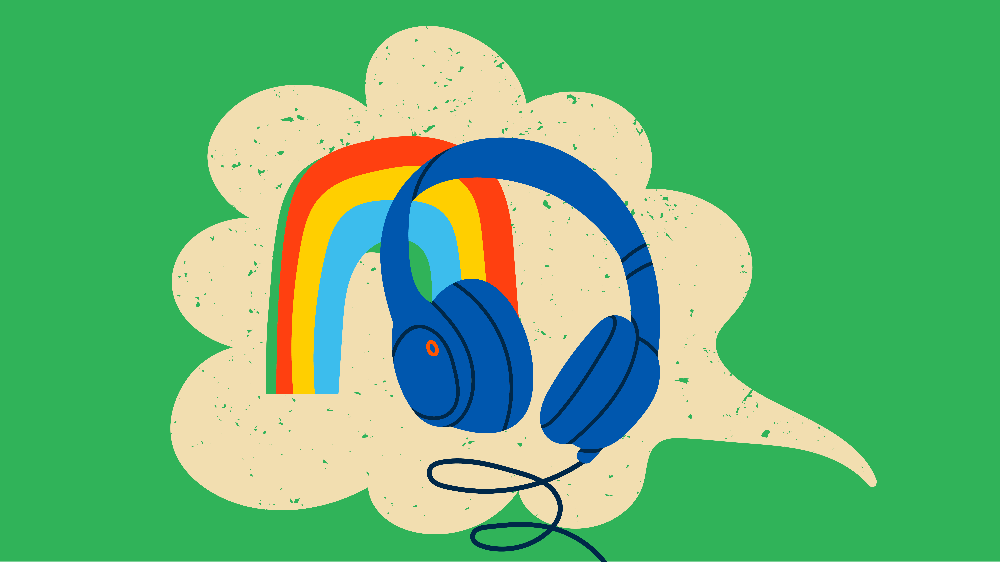

Case study
Sound-colour synaesthesia case study
….causing selective mutism due to unpleasant
colours experienced when hearing own voice
What is sound-colour synaesthesia? Sound-colour synaesthesia is experiencing colour when listening to music or other sounds (e.g., voices, environmental noises). The former is sometimes called music-colour synaesthesia and is found in 0.2% of the population (ref 1). Colours can be linked to different aspects of sound. Some synaesthetes have colours for the timbres of different instruments, some have colours for different musical chords, and other have colours for musical notes in the scale. Like other forms of synaesthesia, sound-colour synaesthesia has a neurological basis which can be seen in brain imaging studies (ref 2). Synaesthetes experience their colours either projected out into space (e.g., suspended above the sound source) or simply in their mind’s eye (and these are called ‘projector’ synaesthetes and ‘associator’ synaesthetes respectively; ref 3). Music-colour show advantages in music; they are significantly more likely to play an instrument than other types of synaesthetes (ref 4).
Case study. Female, aged 10, with an autism diagnosis and no learning disability. She presented with an unusual symptom (“throat filled with colours”) which we were able to trace back to grapheme-colour synaesthesia using our childhood diagnostic test. She also became selectively mute, eventually leaving school and learning from home. Further investigation revealed that the cause of her mutism was an attempt to avoid the unpleasant synaesthetic yellow colour she experienced from her own voice (sound-colour synaesthesia). Other overwhelming sensory sensitivities (also known to be associated with synaesthesia; ref 5) made it impossible for her to continue to attend school. This case study highlights what we know from previous research: that many children and adults experience multiple forms of synaesthesia simultaneously, and that this is also more likely with autistic individuals (ref 6).
You can find out more here about managing and understanding synaesthesia in a clinical context.
References
1. Simner et al. (2006) Synesthesia: the prevalence of atypical cross-modal experiences. Perception, 35(8).
2. Hänggi et al. (2008) The multiple synesthete E.S.: neuroanatomical basis of interval-taste and tone-colour synesthesia. Neuroimage, 43(2).
3. Dixon et al. (2004) Not all synesthetes are created equal: Projector versus associator synesthetes. Cognitive, Affective, & Behavioral Neuroscience 4.
4. Ward et al. (2008). Synesthesia, creativity and art: What is the link?. British journal of psychology, 99.
5. Ward et al. (2017) Atypical sensory sensitivity as a shared feature between synesthesia and autism. Sci Rep., 7:41155.
6. Ward et al. (2017) An autistic-like profile of attention and perception in synesthesia. Cortex, 107.